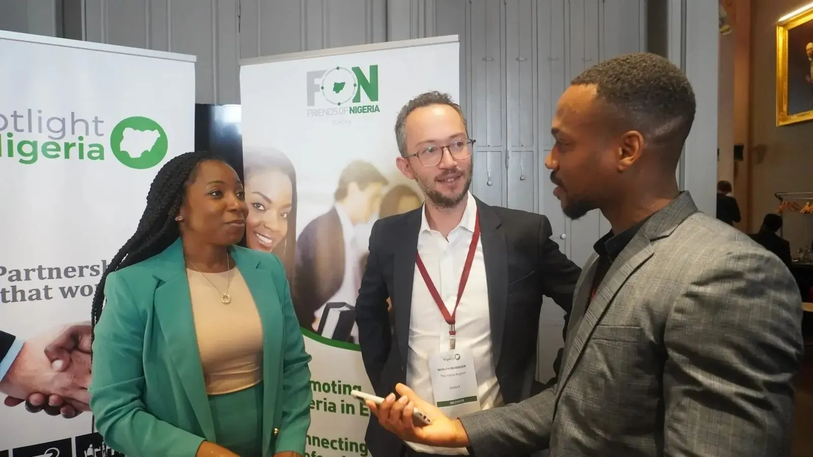

Business and Investment Forum · Since 2014
Spotlight Nigeria
An annual conference and exhibition that gives private sector companies and investors from France and Nigeria a platform to collaborate, exchange ideas, build business contacts and sign deals, with a focus each year on key sectors of the Nigerian economy and key state governments.
- L'Hôtel de l'Industrie, Paris
- 9th edition held on 6 October 2026